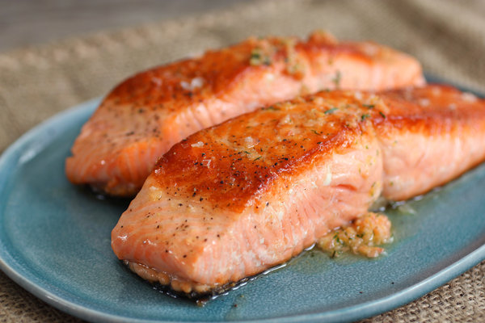

This Oven Baked Salmon is brushed with garlic butter, then sprinkled with a delicious brown sugar spice mix for the perfectly baked, flavorful salmon fillet. This is hands-down the best and easiest way to prepare salmon fillet for dinner!
Preheat oven to 450. Coat baking sheet with butter and place fillet on baking sheet. Cover salmom in Avacado Mayo and sprinkle pecan crumbles on top. Place salmon in oven for 15 mins.